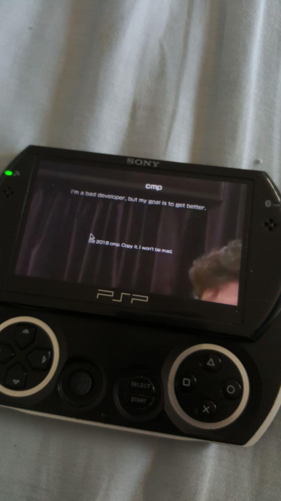

My great blog
Warning: my filter is non-existent, you may get offended.
For an indexed view, check this page
This also works on RSS
The Christmas season
[link—standalone]
It's here... The fucking holidays are in one week and everyone got their hats on. All cities in my country have set up their gigantic Christmas trees and all the songs are getting blasted.
I understand it now (which is why I'm joining this garbage tradition, but I never understood joining it a month prior, like in the end of November. But whatever, I don't care.
I positioned myself away from development for the past few weeks and especially from working on this website, I feel like this site's really reached its peak and I can't really change much significant before fucking it up.
Which is kinda sad for me as the changes for the site for such an important (at least for me) season are minimal.
Anyway, enjoy the Alex Jones (support free speech) and a true boomer joke.
 Sun, 16 Dec 2018 04:51:35 +0200
Sun, 16 Dec 2018 04:51:35 +0200
[link—standalone]
Sometimes a man just needs to install Google apps and to remove them afterwards. For example maybe to download something from the play store or to try something out.
After you did your... whatever, you may be staggered to learn that there is no official way to uninstall gapps.
The recommended way is to wipe and reinstall everything, well, not all of us have the time to do that. So, a solution - forcefully uninstall gapps.
Things needed for this -
- TWRP
- The same ROM as you currently have (flashable zip)
CWM is dead anyway, there is no real reason to use it.
Step 1
Wipe /system, just go to Wipe -> Advanced wipe -> [x] System -> Wipe
Step 2
Open up the terminal, go to Advanced -> Terminal, and type these
# cd /data
# find ./ | grep google | xargs rm -rf
(keep in mind # means that it's ran as root, not a comment.)
Step 3
Flash your ROM, just make sure that it's the same - dirty flashing different ROMs ends badly most of the time.
Step 4
Clear cache/dalvik and reboot!
There, gapps is now gone. It's a hack, but it works. And it works better than reflashing as this actually deletes gapps, while reinstalling a ROM would just not recognize the already existing gapps.
Not really a tool, but I wish I had known this before I needlessly wiped a few installs.
Sat, 27 Oct 2018 03:11:34 +0300
Updates - GitLab, f00f.xyz and a PSP
[link—standalone]
Over the few days I have made a few changes to the site, I'll break them all down briefly.
Changed the domain
Now the primary domain is f00f.xyz, x-t.github.io now just redirects to this domain.
GitLab
I now host a mirror of this site on GitLab.
I also set up GitLab pages on f00f.gitlab.io
It relaxes its HTTPS a bit, which makes it possible to view on troublesome devices, such as this PSP

Sun, 07 Oct 2018 03:55:45 +0300
Untitled rant, or CoC pt. 3
[link—standalone]
In the commit where Linus merged in the CoC to the Linux source code, there has been quite a debate on the decision. A lot of people voiced their opinions there, including me.
Ada, the creator of Contributor Trojan Horse, has replied to the thread with multiple points. Since I don't want to reply to the discussion any more, I'll silently write about it in this blog (that may or may not violate GitHub's TOS).
My primary goal is to open the doors to success in tech through the gateway of open source by making it an option for as many people as possible. Why this is a debatable point, a point of contention, I don't know: but in the current climate, it makes my position political.
A CoC isn't the way to bring more people into tech. The way to bring more people into tech is give them an option to get into the field or not (and they already do), Microsoft's development cycle is teams screaming at each other in cubicles, the development process of Linux is getting an angry letter from a Finnish man because your code is shit.
This is how the climate works, this is how software is made. The only way an argument will never be reached is if you develop the software alone.
If you get offended by that, well then it's not for you, if you can't take an insult over your own shit, I don't think you should be doing anything here anyways. Open source isn't an echochamber, it's not a safezone, if you're bad - you will be called bad.
Contributor Covenant is a political document insofar as it prohibits discrimination, and specifically discrimination against the most marginalized and vulnerable members of the tech community. It is a statement against the status quo, which situation does not serve the needs of all people who have something positive to contribute.
They're not "marginalized and vulnerable". Open source is a level playing field, whether you're a god-forbidden CIS STRAIGHT WHITE MALE or gay or autistic or identify as a rock, no one cares, if you get work done, you'll get work done. Trying to put these minorities out of work, name them, isn't helping anyone and the minorities are supposed to be treated specially. You're creating ethics codes. "Respect the elderly." No.
I am critical of meritocracy, and I am vocal in my criticism. Not so much the concept— the execution. If tech truly is a meritocracy, then why are there so few women and people of color at the top of the hierarchy? Is it really because white men are the best programmers in the world, or are there cultural factors and explicit or implicit biases at play?
Yes.
People who want to get into the sector are working hard. And these people happen to be cis white males. It's not our issue that women would rather go work as teachers than get into developing software.
Meritocracy is going away either way, because of dipshits like Ada. Many companies now have diversity quotas, meaning if you're really good at engineering, you may not be accepted because on the employer's computer there's a message reading "NOT ENOUGH BLACK PEOPLE".
This is the exact opposite of inclusivity, it's racism. Oh, but it's against white people so it's A-OK!
If you truly believe that meritocracy is about valuing the contribution, regardless of the person who made it, why are there personal attacks being made against me here? How are they even relevant? How are my politics relevant?
Because your CoC is shit. No one is going after you because you're an autistic tranny. Everyone is going after you because you deserve criticism for your shitty actions.
Your politics are relevant because your CoC is a reflection of those politics. You call your CoC a political document, therefore it is in the play.
No one can seriously believe that an infraction of code of conduct will result in an instant ban hammer. Maintainers want healthy communities, filled with brilliant and passionate contributors who get along well and are good communicators and collaborators. They should be trusted to investigate complaints and, if necessary, mete out consequences that are proportional to the offense.
Yes because one "transphobic" tweet is a warrant to remove a contributor from a project.
CoCs are trojan horses intended to ban people that you don't like. That's why terms like "hate speech" were pulled out of someone's ass.
A code of conduct does not grant any sort of authority to anyone outside the circle of maintainers. So-called "SJWs" are not the arbiters of the code of conduct, the project maintainers are. And guess what? Even without a code of conduct, project maintainers are within their rights to ARBITRARILY eject people from the community. Has this ever happened? Probably not. And it's even less likely to happen now that there is a SOCIAL CONTRACT between the maintainers and the members of the community.
That is true to some extent. But a CoC is just an indication that your maintenance is so shit you need a document saying "respect autists".
"Opalgate" has been mentioned a few times. I have serious regrets and misgivings about what I did in that situation. I have publicly apologized to both Elia and the project maintainer. And I learned my lesson: since then I have kept out of the politics of projects adopting codes of conduct, leaving it to the maintainers to decide what is best for their communities (as it should be). If you want to know both sides of the opal gate story, you should read my blog post about it: https://where.coraline.codes/blog/on-opalgate/
Great that you have learned... most likely nothing. People like you refuse to learn. Instead of shitting up project's issues on people needed to be removed, you're now going on 3 mile rants about the CIS WHITE MEN on Twitter.
It's true that I have made a number of critical statements about cis white males. That's because cis white males dominate the tech industry. To make progress, we need to critically examine the behavior of the majority. That doesn't mean that I hate men, hate white people, or hate anyone. My critique is simply of the majority, which happens to be white and male.
What?
I'm guessing this doesn't exist!
You hate men, you hate white people, you're "criticising" them because you think that they "dominate".
50/50 equality will never, ever, ever be reached in the history of mankind, ever. Own up to that shit or shut the fuck up.
I can come across as angry on Twitter. That's my right. As a marginalized person in tech— a woman, transgender, with mental health issues, and significantly older than most of my peers— I face a lot of discrimination. I am a constant target of harassment, including doxing and death threats. A mentorship program that I announced last week was flooded with nearly 200k abusive applications including hate speech, homophobic, transphobic, and racist statements. Contact forms on my various websites have received thousands of abusive messages. So I have plenty to be angry about, and no one can or should police my emotions. They are mine and mine alone. If I want to "throw a tantrum" I am free to do so, within the rules and guidelines of the platform that I am using.
Boo-fucking-hoo. If you weren't an SJW twat and didn't contribute horseshit and didn't speak horseshit, maybe you would be respected. But no, you keep talking crap, you keep shoving a cancerous document in everyone's face and just because you're mentally ill and deluded you think that you deserve respect. No. I believe in true equality, and that is one where I can tell you to fuck off, and you can tell me to fuck off.
Conclusion: everything just got even stupider. I can't wait for this stupid thing to end.
Tue, 02 Oct 2018 21:21:14 +0300
Debinking the debunk: Linus Torvalds and Linux Code of Conduct: 7 myths debunked
[link—standalone]
I've already stated my opinion on the Linux CoC drama/situation, currently we're not having any questions answered but we do keep getting more questions to ask. Anyway, I found this article which is inherently pro-CoC, which I think is bullshit. Let's go.
Myth 1. The Linux kernel has been taken over by Social Justice Warriors (SJW)!
This is true, it might not have been "taken over", but their presence is now a part of project, as a CoC is a trojan horse.
Hardly! The new CoC is based on Coraline Ada Ehmke's Contributor Covenant, version 1.4. It's been been adopted by many open-source projects such as Eclipse, Ruby, and Kubernetes.
This does not mean that it's not SJW in any way. A large infiltration size does not equal to it not being SJW. It is simply wrong.
Her sarcastic tweet ("I can't wait for the mass exodus from Linux now that it's been infiltrated by SJWs. Hahahah.") helped bring on the flames.
In what way is it sarcastic? You're implying things here, Ada is a hard-lined SJW that is serious about this shit, trying to shake it of as "hehe it was a joke" is simply wrong.
Torvalds, with other senior Linux kernel developers, added the CoC. No one else did.
Wrong. Greg made it and Torvalds approved the change, see the commit here.
Myth 2. Linus Torvalds left and then adopted the CoC to get ahead of The New Yorker article about his discouraging women from working on the kernel.
You're assuming shit again. State facts or don't fucking talk. We all have questions, don't try to be a Christian and scribble answers in Linus' name.
Myth 3. Nothing is going to change.
Not much should change in terms of the quality of the kernel, unless everything goes to shit, which is currently heading in that direction, as a CoC like that shook up and divided the community even more than it already was.
Myth 5. Purges of Linux kernel developers have begun.
Wrong. I don't know who said that, but you must've been looking hard for that or pulled it out of your ass.
Myth 6. Developers are leaving Linux and taking their code with them.
This is the same as "Myth 5". Stay consistent for fuck's sake.
Myth 7. Linus is never coming back!
Assumption. Linus talked about a vacation which we don't know the length of and he doesn't want to do anything with the kernel for a while. I'm sure he'll come back, but state it as an opinion, not a fact.
Conclusion: fake news. Make up your opinions, don't follow articles blindly.
Fri, 28 Sep 2018 19:52:54 +0300
[link—standalone]
This has definitely been done before (won't check), but I decided to hack another one.
Wanna show what song you're listening to in cmus as a status for pidgin/purple and conky? Well, if you are one of the three people, this thing is for you.
First, the script that shows the current track in a %SONG% - %ARTIST% format. (Referred to as CmusCurrent)
#!/bin/bash
cmus-remote -Q | awk '/tag title / { $1=""; $2=""; print } /tag artist / { $1=""; $2=""; print }' | tac | sed ':a;N;$!ba;s/\n/ /g; s/^\ \ //; s/\ \ \ /\ -\ /'
Next, the script that sets the status/outputs the song (Referred to as PurpleCmus)
#!/bin/bash
if [[ `cmus-remote -Q | grep status` == "status playing" ]]; then
purple-remote "setstatus?status=available&message=`CmusCurrent`"
CmusCurrent
fi
And lastly, the line in your conky.conf
${execi 2 /%PATH_TO%/PurpleCmus}
That's about it. Now you can shove in your music taste to anyone that has you added as a buddy on pidgin.
Fri, 21 Sep 2018 22:20:09 +0300
The Linux code of conduct
[link—standalone]
I've already stated that politics in software is a cancer ruining everything. Thing is, politics anywhere, ruins everything. But that's not the point.
That post was about politics-related licenses, and why they're dogshit. There was a point I never touched, which were codes of conduct. Everyone already talked about them, and there was nothing much I could add.
A good example of a shitty CoC was the FreeBSD project. People flunked out and left ports behind because of the cancer that reached the core FreeBSD team.
It was a good shitshow, because no one uses FreeBSD. Everyone laughed, the core team were butthurt to the bones and kept blocking everyone on Twitter, etc.
But there's one biological thing about cancer, and that is - it spreads. It's always spreading, slow or fast, it's duplicating. And it has reached a part of the sector that people actually do care about. It's Linux, the kernel.
The old code of conflict was replaced with a code of conduct - git log.
Now, it would be fine if it was as sensible as the old code of conflict.
HHAHAHAHA, of course it isn't. Why the fuck would I be writing about it then?
The thing about codes of conduct is that they are political, it may be the No code of conduct protesting against code of conducts or LITERALLY EVERYTHING ELSE that are full of idiotic bullshit.
What CoC did Linux choose?
It chose the Contributor Covenant code of conduct. Let's look at it.
+In the interest of fostering an open and welcoming environment, we as
+contributors and maintainers pledge to making participation in our project and
+our community a harassment-free experience for everyone, regardless of age, body
+size, disability, ethnicity, sex characteristics, gender identity and
+expression, level of experience, education, socio-economic status, nationality,
+personal appearance, race, religion, or sexual identity and orientation.
Already, the question comes up - why? Why in the fuck did you need to write all this bullshit? Isn't a simple
Don't discriminate.
enough? Apparently not.
+* Using welcoming and inclusive language
+* Being respectful of differing viewpoints and experiences
+* Gracefully accepting constructive criticism
+* Focusing on what is best for the community
+* Showing empathy towards other community members
Alright, fine, but how about
Be nice.
Seriously, these piles of stinking shit are needlessly long and bring no real point.
+This Code of Conduct applies both within project spaces and in public spaces
+when an individual is representing the project or its community.
This is the part that makes CoCs different from the rules and from the project. ...right?
Mostly, the people that maintain contributions also maintain the discussion channels. So, no, this means nothing, if you are banned from the mailing list, your pull request might be denied anyway.
And remember, that the CoC means jack shit for unofficial discussion channels/forks. The CoC can be ignored and removed. As much as Rustees don't want to admit, there is a Nazist Rust user group somewhere in Discord.
Enough about that, let's look at the people behind the CoC.
I'll look at two people here
- Contributor Covenant author - Coraline Ada
- The man, the legend - Linus Torvalds
Ada
Ada is well known for shittying up everything involving its name.
Good example - Issue #941 @ opal/opal. It's an interesting read if you have the time.
In short, Ada's fucking stupid. Just like anyone like it.
But let's look at its reaction to its CoC getting added to Linux.


...
Let me repeat again - politics is a cancer. It ruins everything it touches. Do you know what this cancer did? It touched Linux.
There's nothing much to say more about Ada. It's very happy and is doubling down on being a retard.
Linus
The man, is clearly broken.
He's going on vacation, to "learn into empathy", but something is just not right, and it shows.
His daughter signed the post-meritocracy manifesto made by Ada
He doesn't want to go to his conference
It's an absolute shit show, and one thing is in danger - Linus. The part of the Linux kernel that makes it work.
Conclusion
The core of open source is not discriminating. Codes of conduct are a good example of how that ideology is failing.
Politics is a cancer. I'm saying this probably the 500th time, but here is no other way to put it. Open-mindedness and sanity are rare nowadays, and it shows.
Dark days ahead, strap in.

P.S - if you're thinking about moving to OpenBSD, I'll laugh at you, and you'll want to shoot yourself when you realise that to get your mouse to even marginally work you'll need to write a 1000 line Xorg.conf file
Wed, 19 Sep 2018 00:29:50 +0300
Updated license, source code
[link—standalone]
Just because it was now convenient to do so, and my source code got a lot cleaner, I made my site's source code public.
It's hosted on GitHub, check it out here.
I also switched to the GPLv3, replacing the previous BSD-2-Clause license.
Although you probably shouldn't contribute, you can look at the source code.
And maybe repurpose the build system if you want, I don't know. It's just open, that's all.
Tue, 18 Sep 2018 20:05:14 +0300
[link—standalone]
This one is useful when you want to copy some source code to an HTML page (like these series) and you want to do it from a shell.
#!/bin/bash
cat $1 | sed 's/\&/\&\;/g; s/</\<\;/g; s/>/\>\;/g; s/\\/\&bsol\;/g'
Fri, 14 Sep 2018 21:25:49 +0300
New website, why and how
[link—standalone]
Replacing the entire infrastructure of a website isn't an usual thing to do.
I thought that I'd make a blog post explaining why this new website was made and how it works.
Maybe anyone reading this could get some inspiration to do something similar? Don't know, either way this post is really just to test the blogging capabilities of this new infrastructure.
Better than a "this is a test" post, so let's start.
Why?
Money.
Seriously, that's it. Hosting shit is not free and I don't have any money to spend on this project. So I had to come up with a solution that would replace my current infrastructure with something free.
My first idea was neocities, but I also knew that GitHub pages existed, so I went for the latter because neocities' editor is complete garbage.
However, a problem, my entire infrastructure is written with PHP. And these services only allow static website hosting. I needed to be little clever about it.
So, let's move on to the
How?
The ways that my website depended on PHP were these:
- Using
<php? include(); ?>
statements
- My analytics system was written entirely with PHP
For analytics, I could just remove them. Sad, but what can you do.
For the former, I decided to not just scrap the idea of handy one-line include statements and make my own system for using them.
It's written in awk and it's some high level web engineering shit.
For an example, take this template page
<!DOCTYPE html>
<html>
<head>
<title>template</title>
<!-- HEAD -->
</head>
<body>
<!-- NOSCRIPT -->
<!-- CONTACT -->
<!-- NAVBAR -->
<div class="c">
Content
</div>
<!-- COPYRIGHT -->
</body>
</html>
This is a similar system that lb, the blog system I use here, uses. Instead of appending text, this solution just replaces the template parts with text.
To make a page that works though, you need to compile it. I use an awk script that looks like this:
function ReadFile(file)
{
x = ""
while ((getline y < file) > 0) {
x = x FS y FS "\n"
}
return x
}
BEGIN {
r_head = ReadFile("../resources/stdhead.html")
}
{
gsub(/<!-- HEAD -->/, r_head)
print
}
You run it from the shell with
awk -f script.awk file_to_compile.html > compiled_file.html
This will replace the HEAD token with whatever is in resources/stdhead.html. Making it work exactly the same as
<?php include("../resources/stdhead.html"); ?>
It works, I get to run away from the burning dumpster that PHP is and the hosting is free. Pretty neat.
Fri, 14 Sep 2018 20:39:51 +0300
Politics has no place in software
[link—standalone]
Currently there has been a lot of bullshit surrounding the name "open-source".
Probably the latest one so far are so-called anti-fascist licenses. These are stinking turds that are a cancer to everyone.
Go look at one, right now, here's one here
First of all this dumbass put MIT's name of a license they did not fucking make. Second,
ANTI-FASCIST LICENSE:
The following conditions must be met by any person obtaining a copy of this
software:
- You MAY NOT be a fascist.
- You MUST not financially support fascists.
- You MUST not publicly voice support for fascists.
"Fascist" can be understood as any entity which supports radical authoritarian
nationalism. For example: Donald Trump is a fascist; if you donated to his
campaign then all rights provided by this license are not granted to you.
Ever had an open-minded discussion about politics? Ever didn't gobble down all the shit from the far-left/right? Guess what, stay away from muh software now!
Here's another one (only taking the snippet from it, because the same fucktard just attached political cancer onto MIT)
The following license shall not be granted to the following entities or any
subsidiary thereof due to their collaboration with US Immigration and Customs
Enforcement ("ICE"):
- "Microsoft Corporation"
- "Palantir Technologies"
- "Amazon.com, Inc."
- "Northeastern University"
- "Ernst & Young"
- "Thomson Reuters"
- "Motorola Solutions"
- "Deloitte Consulting LLP"
- "Johns Hopkins University"
- "Dell Inc"
- "Xerox Corporation"
- "Canon Inc"
- "Vermont State Colleges"
- "Charter Communications"
- "LinkedIn Corporation"
- "United Parcel Service Co"
This is hosted on Github, mind you, so not only are they using Microsoft's software here but also telling them to not use their software.
Why is there an issue with this? Well, this is NOT open source or free software by definition.
Here's a snippet from the open source definition
5. No Discrimination Against Persons or Groups
The license must not discriminate against any person or group of persons.
6. No Discrimination Against Fields of Endeavor
The license must not restrict anyone from making use of the program in a specific field of endeavor. For example, it may not restrict the program from being used in a business, or from being used for genetic research.
Too legal-sounding? Here's the simplified version from their FAQ
Can I stop "evil people" from using my program?
No. The Open Source Definition specifies that Open Source licenses may not discriminate against persons or groups. Giving everyone freedom means giving evil people freedom, too.
The lack of these retards' understanding that freedom means freedom for EVERYONE is abundantly clear
The Free Software Foundation also has problems with licenses like these:
I'd like to license my code under the GPL, but I'd also like to make it clear that it can't be used for military and/or commercial uses. Can I do this? (#NoMilitary)
No, because those two goals contradict each other. The GNU GPL is designed specifically to prevent the addition of further restrictions. GPLv3 allows a very limited set of them, in section 7, but any other added restriction can be removed by the user.
More generally, a license that limits who can use a program, or for what, is not a free software license.
source
Open source means getting work done, whether you're white, black, gay or straight or whatever. Shit like this makes a big example at how mentally ill the scene of software development has gotten.
Although small, it's good that we have people like Stallman keeping abortion jokes and Torvalds telling you to fuck off because you're stupid. It brings a bit more positive light in this sea of shit.
If you were offended by this blog post - you deserve to be offended. I used insults directly to the people I want to tell to fuck off this planet, although admitedly childish, it illustrates my point. Intonation over text is not possible.
And remember:
I like offending people, because I think people who get offended should be offended.
- Linus Torvalds
:^)
Thu, 30 Aug 2018 11:30:46 +0300
[link—standalone]
Sometimes I just make tools to make my doodly-doos around the computer a little easier.
Since I think these are too small to have their own git repository or something, I thought I'd share these in my blog.
However many I'll write/release, they'll be "licensed" under CC0. Practically public domain, and if your state/country doesn't have public domain - it'll still act like it.
The first in the series is a small thing I made to learn awk. It counts your music by formats.
FLAC sound molesters can flex their RAID arrays with this.
Here's the source code:
#!/bin/bash
find ./ | awk '
BEGIN {
AllMusic=0
Flacs=0
MPThrees=0
MFourAs=0
WAVs=0
}
/flac$/ {
AllMusic++
Flacs++
}
/mp3$/ {
AllMusic++
MPThrees++
}
/m4a$/ {
AllMusic++
MFourAs++
}
/wav$/ {
AllMusic++
WAVs++
}
END {
print "Total music:", AllMusic
print "FLACs:", Flacs
print "MP3s:", MPThrees
print "M4As:", MFourAs
print "WAVs:", WAVs
}
'
Of course there are some issues with this, like not supporting every music format in existance. But you can easily edit it, if you would like to do that.
If you're wondering what my music collection looks like, well...
~/Music> CountMusic
Total music: 560
FLACs: 367
MP3s: 138
M4As: 54
WAVs: 1
~/Music>
I'll leave it there.
Mon, 27 Aug 2018 23:56:41 +0300
So I have a blog now
[link—standalone]
Yeah, I set up a blog.
No particular reason, I just thought that I'd have one.
This runs on lb, a tool made by all-mighty Luke Smith. Tumblr can lick my left nut.
I'm not a blog guy by any means, so expect absolutely no new blog posts.
Maybe they will be memes at best, either way, it's fun setting up shit like this, which is why I do it, even though I may end up never using it.
Mon, 27 Aug 2018 23:20:15 +0300
{kind=link}